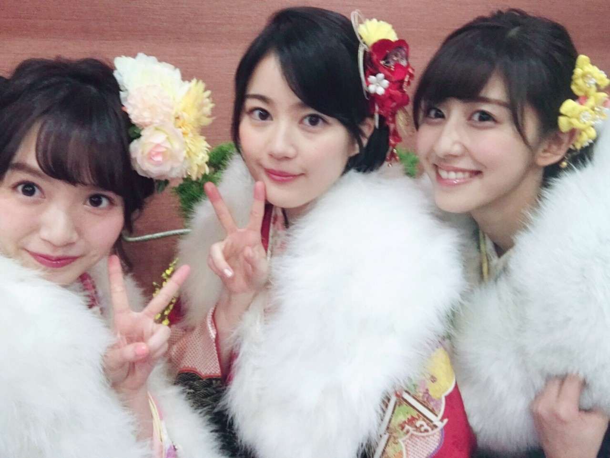
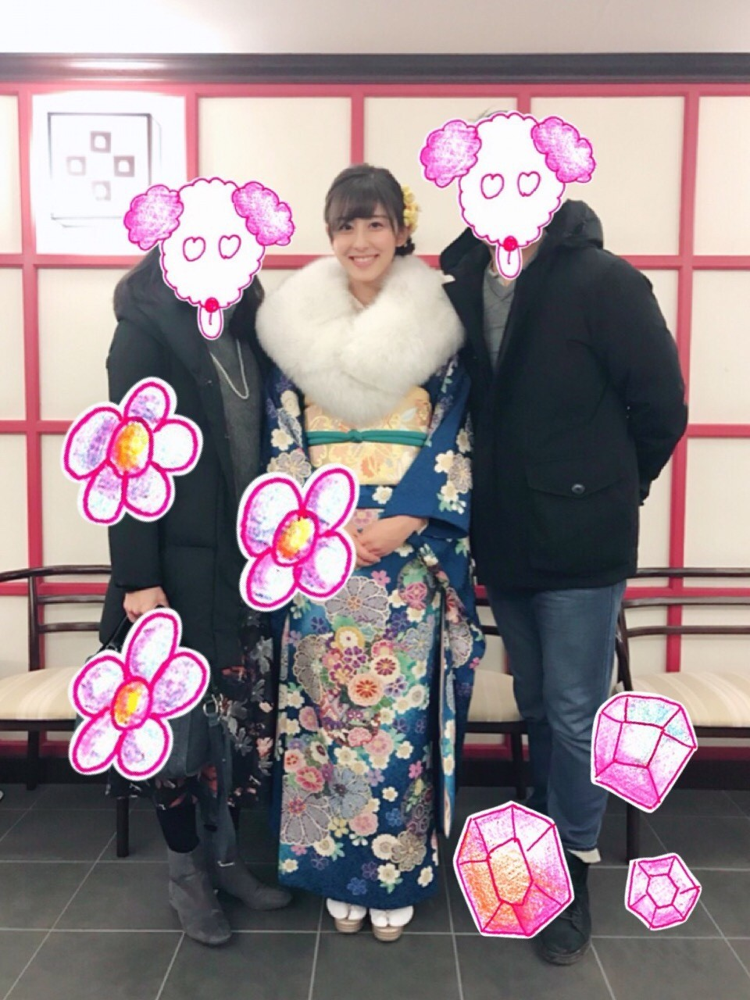
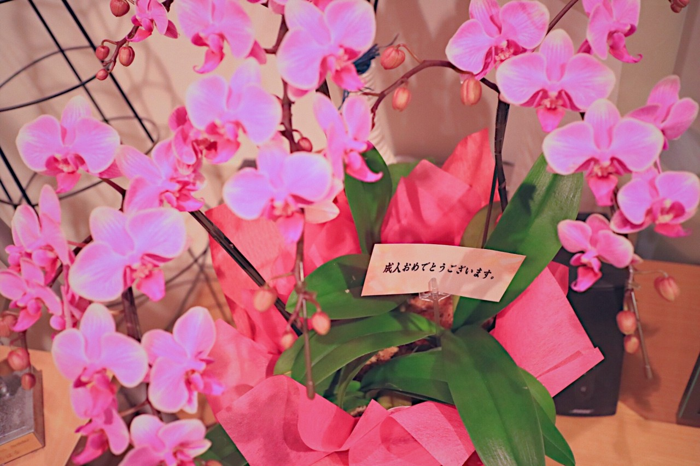
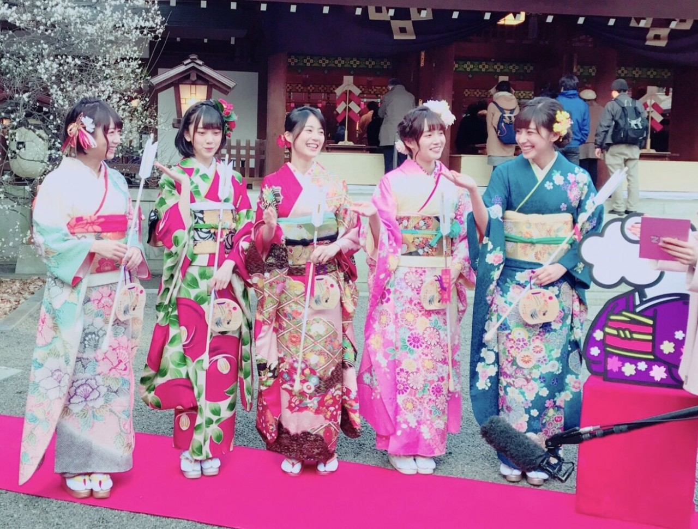
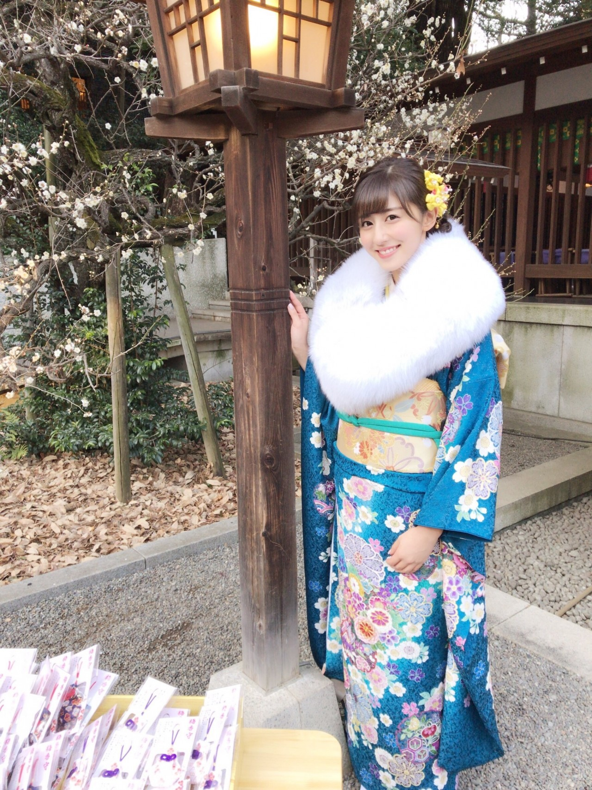

| 2017/01 09 Mon | 斎藤ちはる 成人の日。 |
ちはるーむへようこそ。
本日は成人の日です！
1996年組の同い年の皆さん
成人おめでとうございます(﹡ˆ ˆ﹡)
(私も含めて...)
こうして無事成人を迎えられるのは
ここまで育ててくれた親のおかげです。
本当に感謝しています。
いつも本当にありがとう。
支えてくれて応援してくれてありがとう。
そして応援してくださっている皆さん
ありがとうございます！
斎藤ちはる、少し早いですが
無事に成人になります(> <)！
私が成人なんて自分では
まだ全然信じられないけど...
未成年と成人では、
社会での立場や責任が大きく変わってくるので
しっかりと成人の自覚を持ち
社会に貢献できる大人になりたいです！
そして大人の色気も出せるように...◎

中3組もあっという間に成人です。

大好きな両親と共に。
乃木神社での成人式にも来てくれました！
どんな時でもどんなライブでもどんなイベントでも必ず駆け付けてくれます。
素敵な両親で私は幸せです。
この写真をおばあちゃんに見せたら
おばあちゃんが行きたかった...！と
嘆いてました(> <)
でもそんなおばあちゃんが今朝お花を贈ってくれました！

ピンクが綺麗な胡蝶蘭のお花を
メッセージ付きで...
とっても嬉しかった(﹡ˆ ˆ﹡)
やはり素敵なおばあちゃんです。
私の憧れ！
そして今朝のめざましテレビさんとzip!さん、そしてアサデス。さんに
乃木神社での成人式の模様とインタビューが
放送され、なんと私のコメントが
両番組で流されていたのです！！
朝からテンション爆上げ〜(ホリッピー)笑
いや、もう本当に嬉しかったです。
まさか私のコメントが使われているとは...！
アサデス。さんで紹介されました、
パッと見ただけで美しいと感じる
大人の色気を醸し出せる女性というので
目標にしているのは、
大屋夏南さんや石田ニコルさんです！
素敵な女性になれるように頑張ります◎
めざましテレビさんで紹介されました、
「私に合ったカクテルを。」は
昔からの憧れです。笑
いくちゃんとインタビュー後に、
「私も言ってみたいー！」「だよね！」
という話をしていたら
ひめたんに
「未成年二人の理想が高すぎる。」と言われてしまいました(> <)笑
20歳になったら...！
zip!さんで紹介されました、
この中で一番大人なのは？で
まさか自分がみんなに選ばれるとは
思ってなかったのでびっくりしました...！
いくちゃんに女将さんと言われたのは
少々腑に落ちませんが(笑)
みんなが褒めてくれて嬉しかったです♡
ちなみに、一番子供なのは？という質問もされたのですが、それは4人みんなで
きいを選びました。笑

打ち合わせしたかのような
綺麗な揃いっぷり。
インタビューもとても楽しかったです！！
また出られるように頑張ろう...！
今日は朝は雨でしたが、昼間は晴れて
とても綺麗な天気でした。
私たちの成人をお祝いしているかのような...！
( ¨̮ )( ¨̮ )( ¨̮ )
この日を迎えられて嬉しいです。
----------------------------------------♡
♬ ChihaMusic
「ふりそでーしょん」きゃりーぱみゅぱみゅさん
成人の日と言ったら...！
絶対にこの曲だなと思いました。
振袖を着ている、
女の子のワクワクしている気持ちだったり
成人を迎える戸惑いだったり
凄い自分たちにぴったり。
"こんにちわ こんな記念日は
心から ありがとうって言えるね
いつもははずかしいけど
一生に一度 大切な日"
一生に一度の日。
いつもは恥ずかしくても...
お世話になっている方達への
感謝の気持ちを伝えるべき日だね！

乃木神社にて。
年始はコーナーを
ほとんどお休みしていましたが
今週から再開したいと思います！
今日はChihAnswerです！
今年初めての質問を
みなさんどしどしコメントしてください◎
おやすみ〜
斎藤ちはる